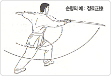
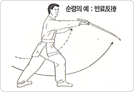
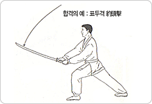
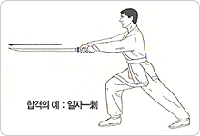
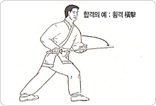
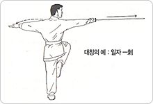

1. 파법把法
검의 자루를 잡는 방법을 파법把法, 혹은 악법握法[쥐는 법]이라 한다. 파법은 초법招法의 기초가 되며, 검의 움직임을 지배한다.
처음 배우는 사람은 검을 잡는 방법이 대부분 서툴러서 부드럽지 못하고, 너무 세게 잡는다. 이 방법은 검이 손 안에서 영활하게 움직이지 않고, 손목 관절의 영활성 발휘에 방해를 받게 되므로 검법의 표현이 분명하지 못하고, 역점力點이 정확하지 못하며, 강유剛柔가 합당하지 않고, 검법의 효과도 크게 줄어들게 된다.
파법把法은 검법의 변화에 따라 손바닥과 손가락의 잡고 푸는 것이 순리대로 자연스러워야 한다. 이를 활파活把라 한다. 파법은 검법의 다름에 근거하여 활파를 강조하고 있다.
활파로 검劍을 잡는 법은 손목은 부드러워야 하고, 손가락은 서로 보조하며 활발해야 한다. 손바닥은 느슨히 풀고 비게 하여, 마치 손바닥 안에 무슨 물체를 담고 있듯이 해야 한다[수심공手心空]. 검 자루가 수심에 닿으면 안 된다. 소위 말하는 지실장허指實掌虛인 것이다.
파법이 숙달되면 검법의 변화에 따라 손가락과 손바닥의 힘쓰는 부위가 변화하게 되므로, 각종 검법을 표현하는 데 정확하면서도 더욱 활발하고 변화가 빠르며 힘이 있게 된다.
파법이 변화하는 등의 동작을 거쳐서 검이 공격 목표에 접근하는 순간에는 확실하게 자루를 잡고 격발擊發해야 한다. 그래야만 검은 정해진 초법招法에 따라 동작을 완성할 수 있으며, 전신의 힘이 손을 거쳐 검의 사용하는 부위에 이르게 된다. 또한 검이 목표를 격중 한 후 반탄력에 의한 진동에도 검을 놓치지 않게 되는 것이다.
평상시 항상 손으로 검을 만져서 손이 검에 대한 감각과 조절 능력을 향상시키고, 끊임없는 반복 연습을 통해 소홀한 점이 없도록 하여 전신의 힘이 팔을 거쳐 검 끝까지 이어지도록 해야 한다.
2. 배수配手
검劍을 수련 할 때 두 손으로 검을 잡고 수련하는 방법과 한 손으로 검을 잡고 수련하는 방법이 있다.
한 손으로 검을 잡고 수련할 때, 검을 잡지 않은 다른 한 손을 배수配手[손이 짝지워지다]라 한다. 검법劍法에서의 배수는 검결劍訣[검지劍指]을 주로 사용하고, 도법刀法에서의 배수는 주로 장掌과 권拳을 사용한다. 검결의 방법은 다양하나 일반적인 방법은 식지와 중지를 곧게 펴고, 나머지 세 손가락은 수심을 향해 구부리거나 엄지손가락으로 무명지와 소지의 첫 번째 마디를 누른다.
배수配手와 검劍의 배합은 자세와 동작이 순탄하고 평온하도록 유지해 주며, 격발의 역량을 더욱 강하게 해주는데 있다. 배수의 배합하는 방법에는 일반적으로 순령順領, 합격合擊, 대칭對稱의 방식이 있다. |
 |
|
순령順領은 배수配手와 검劍이 동일한 운동권 안에서 동일한 방향을 향하여 하나가 이끌면 하나는 따르면서 배합하는 방법을 말한다. 예를 들어 우궁보右弓步에서 앞을 향해 정료正撩할 때, 왼손[배수]을 먼저 아래에서 앞을 향해 들어 올리면 검劍은 이를 따라 나간다. 이것은 배수配手로써 검을 이끄는 것이다.
|
|
반대로 반료反撩할 때는, 검이 먼저 왼편 아래를 지나 앞을 향해 들어 올리면 왼손은 검을 따라 들어 올리는 방향을 향해 배합하여 움직인다. 이것은 검이 배수를 이끄는 것이다.
합격合擊은 검을 잡은 손과 배수를 한 곳에 합하거나, 도법刀法에서 도刀의 몸체를 부축하며 배합하여 움직이는 방법을 말한다. |
|
 |
|
 |
|
예를 들면 두 손으로 검의 자루를 잡고 앞을 향해 곧바로 찌르거나 아래를 향해 치는 동작, 또는 한 손으로는 도刀의 자루를 잡고 다른 손[배수]으로는 칼등을 받쳐 주며 미는 동작 등이다. 검은 양편에 날이 있기 때문에 배수로 검신劍身을 받쳐 줄 수 없으니 주의해야 한다.
대칭對稱은 검과 배수가 서로 상반된 방향으로 움직일 때,
양자의 운동노선, 폭, 경력勁力이 서로 대칭으로 배합하는 |
 |
|
방법을 가리킨다. 예를 들면 오른손으로 검을 잡고 앞을 향해 찔러 나가면 배수는 뒤로 뻗어 배합하고, 또 오른손으로 검을 잡고 오른편 옆으로 베어 치면 배수는 왼편 옆으로 펴서 배합한다.
어떤 동작은 비교적 복잡하여 배수의 동작 또한 이에 상응하여 복잡하다. 다만 상하, 좌우, 전후로 배합하면서 검이 입원立圓으로 나가면 배수配手또한 입원立圓으로 이동하 |
 |
|
고, 검劍이 평원平圓으로 나가면 배수配手 또한 평원平圓으로 이동하며, 검劍이 직선直線으로 나가면 배수配手 또한 직선直線으로 이동한다. 총괄하면 점力點, 선線, 면面의 대칭으로 몸과 검이 합일合一되도록 하여야 세勢가 바르고, 초식招式이 원만한 것이다.
배수는 이러한 원리를 따라서 기법과 적합하게 조화시켜 움직여야 한다. 상하, 좌우, 전후 합격合擊으로 호응하며, |
|
혹은 팔을 펴서 평형을 유지하고, 혹은 검을 따라 세勢를 돕기도 하며, 혹은 찌르거나 휘둘러 상대의 시선을 교란시키기도 한다.
주의할 점은, 배수配手는 검劍의 안쪽 방향에서 움직이면서 절대 동작에 착오가 생겨서는 안 된다. 착오錯誤가 생기면 칼날에 상처를 입을 위험이 있다. 따라서 배수配手의 움직임은 모두 몸 가까이 붙여 돌며 보조하고,
|
|
 |
|
검劍은 배수의 팔 외부로 움직여야 한다.
배수의 움직임과 회전은 활발하고 영활해야지 정체되고 둔해서는 안 된다. 검이 멈추지 않으면 배수도 그쳐서는 안 된다. 배수의 배합은 자유로이 응용할 수 있어야 한다. |